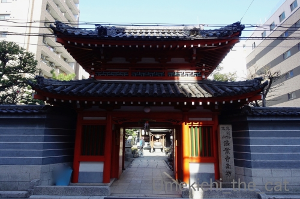
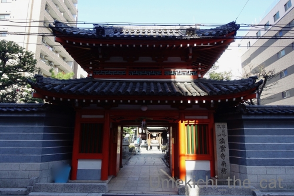

乾燥の季節 [梅吉]
乾燥しがちな日が続きますね。
梅吉を触るとぱちっと静電気が起きて嫌な顔されることもしばしば(⌒-⌒;

乾燥して？くちびるが歯にくっついて閉まらなくなってましたw
「ムキ」っとしたまま寝てたのでお口を閉めてあげる。

先日買ったもふもふもの猫ベッドも使ってますが
やっぱりお気に入りはキャットタワーのクリアボール。
新春肉球むぎゅむぎゅ大会！！0(≧▽≦)0
クリアボール、
クリアな視界を生かして寝たふりしながら下僕を観察している事もあるんですよ。
ふと見ると目があってなぜか焦る下僕・・・
この写真にはこちらを観察する梅吉の目が写ってます。
わかりますか？(≧▽≦)
※おっとは「潜望鏡を覗いているようだ」と言ってます＾＾
クリアボールでぬくぬくも良いようですが
エアコンで温まったフローリングが気持ち良いことにも気づいたようです。
（7秒。環境音入ってます）
温風を浴びてのびーん！！
そのままおかーさんににじり寄ってきてバリバリバリバリ・・・
爪とぎにされました( ´艸｀)
 ↑ガブッと一押し↑
↑ガブッと一押し↑
三連休だった週末、大阪七福神めぐりに行ってきました。
例年は三が日に出かけているのですが今年はちょっと出遅れw

我が家のスタートは三光神社から。
この辺りは真田幸村のゆかりの地であり真田山と呼ばれております。
神社に祀られているわけではないのですが
昨今の歴史ブームで幸村目当てに訪れる方の姿が多くみられます。
この日も「歴史おばちゃん」みたいな人たちが幸村の像の前で盛んに自撮りしてましたw
七福神めぐりとしては寿老人にあたるのですが
（七福神の記事なので神社そのものの御祭神は省きますね）
祀られているのは竹内宿禰という記紀に登場する伝説の人物。
大変なご長寿だったと言われていることから寿老人と同一視されたようです。
（ちなみに寿老人とは中国：道教の神仙です）
こちらが竹内宿禰を祀った末社。
手水舎の隣にひっそり建ってます。
七福神巡りの方は本殿だけお参りしてはダメですよー＾＾
この小さなお社を見逃さないでくださいね。
てくてくあるいて次に向かいます。

年に一度しか歩かないルートなんですが心配なのは道路の真ん中に立っている
楠（だと思う）と小さなお社。
年々弱々しくなって一昨年の台風の影響もあってか今にも枯れそうな感じなのですが
今年もなんとか命をつないでいらっしゃる様子で安心しました。
二番目に訪れたのは長久寺。日蓮宗のお寺です。
淀君が息子秀頼の武運が「長く久しく」あるようにと大阪城築材の余材で創建したそうです。
現在は建て替わっていて昔の築材は無くなっていると思われます。
ここでは福禄寿にお参り。
寿老人と福禄寿、同一視されることがあったりして何が何やら私もよくわかりませんですw

次は法案寺。
1400年前に聖徳太子が建立したと言われています。ご本尊は薬師如来。
七福神では弁財天を祀ってます。
弁財天・・・インドの神様が由来のせいかお寺の周りがインターナショナル！？
というかアジア人街。
お店の看板が中国語かハングルのどちらかで日本語が書いてないのが多いのですよ・・・
桃谷や鶴橋（東京で言えば新大久保みたいな？）なんてものじゃないです。
アウェー感がハンパなく・・・・・(⌒-⌒;
弁財天にお参りしたのでZEPETOでも弁天様に扮してみた！
琵琶が無いのでギターにしたら売れない流しの歌手みたいになってしまった( ´艸｀)
長くなったので次回に続きます。
梅吉を触るとぱちっと静電気が起きて嫌な顔されることもしばしば(⌒-⌒;
乾燥して？くちびるが歯にくっついて閉まらなくなってましたw
「ムキ」っとしたまま寝てたのでお口を閉めてあげる。
先日買ったもふもふもの猫ベッドも使ってますが
やっぱりお気に入りはキャットタワーのクリアボール。
新春肉球むぎゅむぎゅ大会！！0(≧▽≦)0
クリアボール、
クリアな視界を生かして寝たふりしながら下僕を観察している事もあるんですよ。
ふと見ると目があってなぜか焦る下僕・・・
この写真にはこちらを観察する梅吉の目が写ってます。
わかりますか？(≧▽≦)
※おっとは「潜望鏡を覗いているようだ」と言ってます＾＾
クリアボールでぬくぬくも良いようですが
エアコンで温まったフローリングが気持ち良いことにも気づいたようです。
（7秒。環境音入ってます）
温風を浴びてのびーん！！
そのままおかーさんににじり寄ってきてバリバリバリバリ・・・
爪とぎにされました( ´艸｀)
三連休だった週末、大阪七福神めぐりに行ってきました。
例年は三が日に出かけているのですが今年はちょっと出遅れw
我が家のスタートは三光神社から。
この辺りは真田幸村のゆかりの地であり真田山と呼ばれております。
神社に祀られているわけではないのですが
昨今の歴史ブームで幸村目当てに訪れる方の姿が多くみられます。
この日も「歴史おばちゃん」みたいな人たちが幸村の像の前で盛んに自撮りしてましたw
七福神めぐりとしては寿老人にあたるのですが
（七福神の記事なので神社そのものの御祭神は省きますね）
祀られているのは竹内宿禰という記紀に登場する伝説の人物。
大変なご長寿だったと言われていることから寿老人と同一視されたようです。
（ちなみに寿老人とは中国：道教の神仙です）
こちらが竹内宿禰を祀った末社。
手水舎の隣にひっそり建ってます。
七福神巡りの方は本殿だけお参りしてはダメですよー＾＾
この小さなお社を見逃さないでくださいね。
てくてくあるいて次に向かいます。
年に一度しか歩かないルートなんですが心配なのは道路の真ん中に立っている
楠（だと思う）と小さなお社。
年々弱々しくなって一昨年の台風の影響もあってか今にも枯れそうな感じなのですが
今年もなんとか命をつないでいらっしゃる様子で安心しました。
二番目に訪れたのは長久寺。日蓮宗のお寺です。
淀君が息子秀頼の武運が「長く久しく」あるようにと大阪城築材の余材で創建したそうです。
現在は建て替わっていて昔の築材は無くなっていると思われます。
ここでは福禄寿にお参り。
寿老人と福禄寿、同一視されることがあったりして何が何やら私もよくわかりませんですw

次は法案寺。
1400年前に聖徳太子が建立したと言われています。ご本尊は薬師如来。
七福神では弁財天を祀ってます。
弁財天・・・インドの神様が由来のせいかお寺の周りがインターナショナル！？
というかアジア人街。
お店の看板が中国語かハングルのどちらかで日本語が書いてないのが多いのですよ・・・
桃谷や鶴橋（東京で言えば新大久保みたいな？）なんてものじゃないです。
アウェー感がハンパなく・・・・・(⌒-⌒;
弁財天にお参りしたのでZEPETOでも弁天様に扮してみた！
琵琶が無いのでギターにしたら売れない流しの歌手みたいになってしまった( ´艸｀)
長くなったので次回に続きます。

カフェオレ色の梅吉

梅吉 2023年8月10日 永眠


梅吉と出会った譲渡会

犬猫の理由なき殺処分ゼロ
妄想広告
UMEKICHI 光

爆発的に早い！
時々攻撃的！
Thanks to Mr.Boss365
爆発的に早い！
時々攻撃的！
Thanks to Mr.Boss365

梅吉さんのお目目発見! そんなところにあったのね。
ちぃさんの「売れない流しの歌手」に爆笑。ギターがなければお上品に見えますよ。
by zombiekong (2020-01-16 01:15)
こんにちは。
梅吉君、乾燥で歯にくっつく現象は可愛いですが、危険な感じです（笑）
小生宅、乾燥したいようにしていますが、朝の結露がひどい状態です。
微妙ですが、拡大して梅吉君の片目を微かに確認！！嬉しいです（笑）
「爪とぎ」凄いですね。出だしの脱力下半身が最高です（爆）
大阪七福神めぐり、都内でも「七福神めぐり」品川区でやってました。
『「歴史おばちゃん」みたいな人たち』いるのですね？楽しそう。
比較の「桃谷や鶴橋」も知りませんが・・・
アウェー感？韓国で日韓戦な感じですね（笑）
「売れない流し」大爆？です。次回に続き？流しましたね（爆）！？(=^･ｪ･^=)
by Boss365 (2020-01-16 01:51)
充電してるから電気が通ってるのかニャ？（ﾟ□ﾟ）
梅吉さんの目？良く判んないな？
by 英ちゃん (2020-01-16 02:06)
全然分かりません＾＾；
by ぽちの輔 (2020-01-16 05:36)
クリアボールにむぎゅっと詰まった肉球を堪能させていただきましたが、
梅吉さんと目が合って「あっ、バレてる(;^ω^)」ってｗ
梅吉さん、のび～からのずりずり移動、
にゃんこってこういうときはとってもスムーズに動きますよねぇ(;^ω^)
by ニッキー (2020-01-16 07:14)
乾燥してますね。
自分は歯医者で口を空いているとき、感想で唇は歯茎にくっついて痛い思いをしました(^_^;)
梅吉さん、新たなぬくぬくを発見できて幸せですね～(^^)
by kou (2020-01-16 07:57)
クリアボールからのにくきう～♪♪
ニマニマして、画面をつついちゃいました^m^
フローリングでのび～も気持ちよさそ。長いですねぇー^m^
ニャンコって基本、長いですよね(^^;)
しかし、爪とぎにされちゃ、かなわないなぁ。痛いって！
ZEPETOさん、売れない流しの歌手なのはギターのせいですってーー。
ご本人は別嬪の弁天様ですよー。
by ChatBleu (2020-01-16 08:33)
乾燥で梅吉さんも静電気ですか！
乾燥防止に加湿器フル回転です(^^)
by ma2ma2 (2020-01-16 09:47)
チラ牙！むぎゅ肉球！溜まらない可愛さです(#^.^#)
って静電気はイヤですね・・・
のびぃ～からのバリバリ！
可愛いですが・・・ボロボロになりますね（笑
by きぃ (2020-01-16 10:00)
ああ、チラ牙にむぎゅむぎゅ大会にフローリングずり上がってのおかーさん爪とぎ！！
悶絶ネタを惜しげもなく連発、ありがとうございます(#^^#)
パッと目があうと何で焦っちゃうんでしょう・・。
別に悪い事してたわけでもないのに、私もアタフタしちゃいます^^;
爪とぎ本格的ですね♪
ウチのは立ってる私の後ろからやってきてお尻をバリバリやります♪♪
道路の真ん中の木の向かいの「asse」に時々行きます^^
ミナミの繁華街が近いこともあり、道一本隔てると看板が全部外国語になる場所ありますね。
ミナミの繁華街が近いので
by ゆきち (2020-01-16 12:21)
猫も唇が渇いて歯にくっついてしまうことがあるのですね！
ムキッとなった口元が変顔コレクターにはたまらないです。
クリアボウルもすっかり気に入ってもらえたようで・・・押し付けられた
肉球やらオチリやらしっぽが絶景です。
七福神めぐり、相方君がどうやら前厄？らしく昨年の諸々の不幸はそのせいだと
先日、八坂神社へ行ったときに言っておりました。
なので厄除けをしたいそうです。この七福神めぐり、よさげな感じですね。
私はあまり厄年とか気にしてないんですけどお払いとかされてます？
by marimo (2020-01-16 15:36)
梅吉さん、ちっと舌打ちしてるように見えました。
乾燥で歯が見えてたんだ～！
クリアボウル、すっかりお気に入りになったのですね。
あ～こっち見てる！
長く伸びてるのもかわいい～そして爪とぎ！うふふ、かわいいにゃ～^^
幸村の像があるとこなんですね。
七福神、まぜこぜなのが日本らしくて面白いですね。7か所回ったことはないけど^^;
by sana (2020-01-16 15:49)
静電気パチッ！たまにあります。^^;
乾燥して口が閉じないことおありですか！
ウチのはまだ見たことありませんが、不在のときになっているかも。
梅吉さんの目、うう、わかりませんでした。。。
周囲の土地がどれだけ開発されても、お寺や神社は変わることなく佇んでいるので、ホッと一息つくことが出来ます。^^)
by yes_hama (2020-01-16 21:52)
梅吉さん『キャットタワーのクリアボール』
愛用してますね（笑）
ムギュッとした肉球は絶品です（笑）
七福神巡りは昨年１度行きました。
我が家も三光神社から始めました。
道路の真ん中のお社の数分東の方のマンションに昨年の９月まで住んでいました（笑）
ゆきちさんが行かれる『asse』には、
引越しの前後は特に何度も行きました。
住んでいたマンションは（先日）近所を通った時に部屋を見上げてみると、空き家のようでした（人が住んでいない部屋って空気が違います）
立地が良いので、すぐにでも売れるかと思っていましたが、世の中厳しいようです（笑）
by kiki (2020-01-17 00:20)
猫もくちびるが歯にくっついて閉まらなくなることあるんですね・・・
パックリいくこと多々あるので大事にならなくて良かったです♪
そして動画は梅吉さんめっちゃ伸びてる～
ほふく前進みたいでちょっと面白ろかったです(笑)
新春から七福神めぐりとはこれは今年は縁起がいい予感(^^♪
by yamatonosuke (2020-01-17 01:27)
きゃわゆい！
ガラスのテーブルに座ってる猫を下から見るの好きだったなあ・・（遠い目）
by じゅらまろ (2020-01-17 15:14)
しまらなくなったお口もむぎゅむぎゅも、かわいーい♡
仕事の失敗も吹き飛びました。はあ、にゃんこと暮らしたい…（心の叫び）
諸般の事情で飼えないのでにゃんこブログクルージングで
心の渇きを満たしておりまする。
by liang (2020-01-17 16:14)
流しの弁天様、笑える～～～～！
このピックガードとヘッドの形状からすると
ヤマハ製のギターと推測されます！
by よーちゃん (2020-01-17 22:10)
梅吉君、立派な牙ですね～
クリアボールのところから目が？？
しばらく見てやっとわかりました
ちゃ～んと見てるんですね
by 藤並 香衣 (2020-01-18 01:04)
梅吉さん、爪とぎに無化夢中ですね。
by ニコニコファイト (2020-01-18 09:47)
おぉ、しっぽに隠れて、見･て･ま･す･よ〜
新春肉球むぎゅむぎゅ大会、ええ眺めや〜(^^)v
おかーさんで爪とぎって･･･よじ登ってるや〜ん♡
by のらん (2020-01-18 10:58)
梅吉さんノビノビしゅるしゅるかわいいですねぇ。
う～ん、静電気いやですね。
私も静電気体質なので…
by ふにゃいの (2020-01-18 17:12)
新春肉球むぎゅむぎゅ大会♪
肉球がぷちぷちしてておいしそう。
いくらも数の子も苦手なのだけどこれはぱくんしたいよ～っ(≧▽≦)
by emi (2020-01-18 22:02)
どうコメントしようかと読んでいたら
最後の『売れない流しのギター弾き』に
噴き出してしまいました（:.´艸`:.）ぶっ
髪型は奈良朝チックでステキですけどねｗ
大阪七福神めぐり、私全然知りませんでしたー(笑)
どのあたりかも検討つきません＾＾
by カトリーヌ (2020-01-20 16:38)